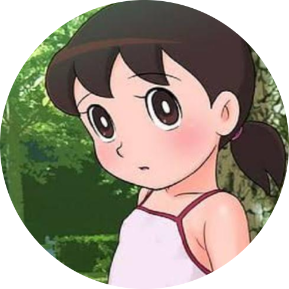

|  | Sizuka MinamotoGoal :Help Nobita to be a better person. Intelligence.Pianism.Cooking |
| Bathing | 💜💜💜💜💜 | Studying | 💜💜💜💜 |
| Cooking | 💜💜💜💜💜 | Playing the violin | 💜💜💜 |
| Baking | 💜💜💜 | Helping others | 💜💜💜💜💜💜 |
Shizuka is a young girl with fair skin, black hair (brown in the 1973 and 1979 anime) with pigtails. She often wears a long-sleeved dress, and has two socks cover her feet, orange shoes. The 1973 and 1979 versions of the dress are pink with a white stripe close to the skirt's hem. It loses its hem stripe in the 2005 anime, which gives it a blue skirt region.
Other outfits include a long-sleeved shirt and either a skirt, trousers, or a dungaree. The 2005 outfit adds a long-sleeved turtleneck sweater and pleated skirt.
Shizuka is a smart and kind neighbourhood girl, and a quick-witted and very studious child. She cares for weaker people, abused animals, nature, and neglected dolls. She loves her dolls a lot, and can easily get angry at Nobita for accidentally doing something wrong to them, only to forgive him when seeing him doing something good to others. Shizuka and Doraemon are also among the few that can see Nobita's true goodness, and always encourage him to try his best. In fact, as shown in their childhood sequences, Shizuka was the one who consoled Nobita when they were younger whenever Suneo and Gian bullied him. She acts as the voice of reason for the main group, often being the one to calm them down whenever they clash.
Shizuka has a hobby of bathing, as she takes baths several times a day. Therefore, Nobita often accidentally disrupts her in the bath due to some misuse of Doraemon's gadgets, leading to Shizuka angrily telling him to go away every time. She is also known for taking piano lessons unwillingly, sometimes as an excuse for declining to hang out with Nobita or friends, even though she proves herself to be a skilled pianist, and despite liking violin her playing is as atrocious as Gian's singing. Secretly, she likes eating sweet potatoes, something she prefers not to tell anyone. In some episodes, whenever Nobita accidentally sees her eats sweet potatoes, she will also angrily tell him to go away just like whenever he accidentally disrupts her baths. Additionally, Shizuka has a more tomboyish side, as she often acts more like a boy when no one knows, perhaps best shown in the episode "The Substitution Rope Story", in which she and Nobita temporally switch bodies so she can fulfill her desire to climb trees. She also has a fear of frogs, but not as much as Doraemon's fear of mice.
Shizuka wishes to be a nurse or an air-hostess when she grows up, and both jobs reflect her kind nature